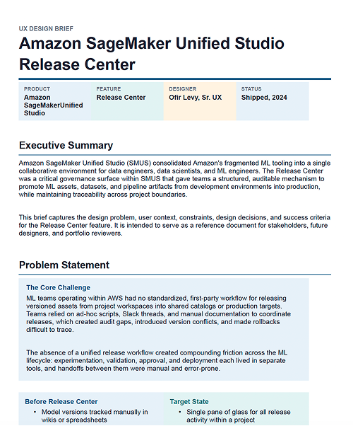

Step 1 · Project specification and documentation
Everything starts with organization and clarity. I draft a project brief with objective, customer problem, and initial solution direction. Even as AI reveals additional insights later, solid specs at the start are essential. I use Notion, Claude, ChatGPT, or Amazon Quick Suite to build this foundation and make prompts more precise and effective.
Open external artifact ↗